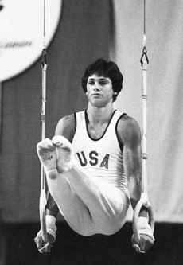

Mitch Gaylord (USA)
1984 Olympic V Silver Medalist

Medal Total
- Olympic Games: 1 Gold, 1
Silver, 2 Bronze
Competition Results
- 1979
- JO Nationals: 14th AA
-
- 1980
- Pac-10 Championships: 2nd AA
- US Nationals: 12th AA, 9th HB
- USGF Intl. Invitational: 17th AA, 3rd HB
-
- 1981
- All-American Classic: 1st AA
- Maccabiah Games: 1st AA, 1st FX, 1st PH, 1st R, 1st
PB, 1st HB, 2nd V
- NCAA Championships: 6th AA
- University Games: 20th AA
- US World Trials: 8th AA
- USA-FRG Dual Meet: 4th AA
-
- 1982
- Caesar's Palace Invitational: 4th AA
- Chunichi Cup: 6th AA
- National Sports Festival: 1st AA
- Tokyo Cup: 3rd V
- US Nationals: 2nd AA, 1st HB, 2nd FX, 2nd PB, 3rd V, 5th R
- USA-CHN Dual Meet: 2nd Team, 3rd AA
- USA-USSR Dual Meet: 1st Team, 1st AA
- USGF Intl. Invitational: 4th AA, 5th V, 6th HB
-
- 1983
- American Cup: 2nd AA
- Caesar's Palace Invitational: 1st AA
- Emerald Empire Cup: 4th AA
- University Games: 8th AA
- US Nationals: 1st AA, 1st FX, 1st R, 1st HB, 3rd HB,
4th PH
- US World Trials: 4th AA
- USA-USSR Dual Meet: 2nd Team, 7th AA, 1st FX, 1st R,
1st HB, 3rd V
- World Championships (Budapest): 4th Team, 8th AA
-
- 1984
- NCAA Championships: 1st AA, 2nd R, 5th V, 9th PH
- Olympic Games: 1st Team, 5th AA, 2nd
V, 3rd R, 3rd PB
- UCLA Invitational: 1st AA, 1st R, 1st HB, 2nd FX
- US Nationals: 1st AA, 1st R, 2nd V, 3rd PH, 3rd PB,
4th FX, 5th HB
- US Olympic Trials: 2nd AA
- USA-CHN Dual Meet: 3rd AA
This page was created on July 3, 1999 and was last updated
on May 01, 2000.
© Gymn Forum